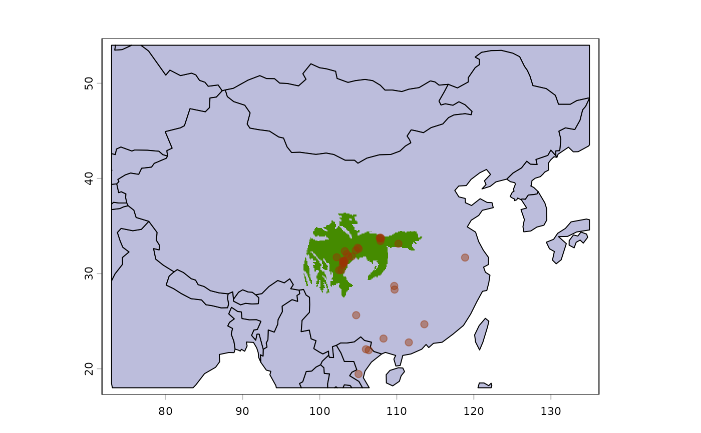

Estimate ecologically informed species ranges from occurrence data and an ecoregion layer. The workflow combines outlier filtering, clustering, convex hull construction, and intersection with occupied ecoregions.
Arguments
- occ_coord
getGBIFobject returned byget_gbif()or adata.framecontaining the columnsdecimalLongitudeanddecimalLatitude.- ecoreg
Spatial ecoregion layer in WGS84. Accepted classes are
SpatialPolygonsDataFrame,SpatVector, andsf. This can be a downloaded layer fromread_ecoreg()or a custom layer created bymake_ecoreg().- ecoreg_name
Character. String naming the field in
ecoregthat defines ecoregion categories. Foreco_terra, for example,"ECO_NAME"is the most detailed level. Whenecoregcomes frommake_ecoreg(),"EcoRegion"is used automatically.- degrees_outlier
Numeric. Distance threshold in degrees. Points whose
clust_pts_outlier-th nearest neighbour lies beyond this distance are treated as outliers. Default is5.- clust_pts_outlier
Numeric. k-nearest-neighbour order used for outlier detection. Default is
4.- buff_width_point
Numeric. Buffer width in degrees for isolated points.
- buff_incrmt_pts_line
Numeric. Increment in buffer width for linear clusters.
- buff_width_polygon
Numeric. Buffer width in degrees applied to convex hull polygons.
- dir_temp
Character. String giving the directory used for temporary convex-hull files. Defaults to
tempdir().- format
Character. Output format for the range map. One of
"SpatVector"(default),"sf", or"SpatRaster"."SpatRaster"rasterizes the range at the resolution set byres.- res
Numeric. Output resolution in degrees when
format = "SpatRaster". Default is0.1(about 11.1 km at the equator). The achievable resolution is constrained by the spatial precision ofecoreg.- verbose
Logical. Should progress messages be printed?
Value
An object of class getRange with two fields:
init.args, containing the arguments and data used to build the map,
and rangeOutput, containing the resulting SpatVector,
sf, or SpatRaster object.
Details
The function follows four main steps.
First, occurrence points are filtered for spatial outliers using k-nearest-neighbour distances and are assigned to ecoregions.
Second, points within occupied ecoregions are grouped into clusters using a combination of Gaussian mixture modeling and k-means clustering.
Third, each cluster is converted into a polygon. Single points receive
circular buffers, collinear clusters receive line-based buffers, and other
clusters receive buffered convex hulls through conv_function().
Fourth, cluster polygons are intersected with their parent ecoregions and merged into a final range layer.
Download-ready ecoregion datasets include eco_terra for terrestrial
species, eco_fresh for freshwater species, and eco_marine or
eco_hd_marine for marine species.
References
Hagen, O., Vaterlaus, L., Albouy, C., Brown, A., Leugger, F., Onstein, R. E., Novaes de Santana, C., Scotese, C. R., & Pellissier, L. (2019). Mountain building, climate cooling and the richness of cold-adapted plants in the Northern Hemisphere. Journal of Biogeography. doi:10.1111/jbi.13653
Lyu, L., Leugger, F., Hagen, O., Fopp, F., Boschman, L. M., Strijk, J. S., ... & Pellissier, L. (2022). An integrated high resolution mapping shows congruent biodiversity patterns of Fagales and Pinales. New Phytologist, 235(2), 759-772. doi:10.1111/nph.18158
Olson, D. M., Dinerstein, E., Wikramanayake, E. D., Burgess, N. D., Powell, G. V. N., Underwood, E. C., D'Amico, J. A., Itoua, I., Strand, H. E., Morrison, J. C., Loucks, C. J., Allnutt, T. F., Ricketts, T. H., Kura, Y., Lamoreux, J. F., Wettengel, W. W., Hedao, P., Kassem, K. R. (2001). Terrestrial ecoregions of the world: a new map of life on Earth. BioScience, 51(11), 933-938. doi:10.1641/0006-3568(2001)051[0933:TEOTWA]2.0.CO;2
The Nature Conservancy (2009). Global Ecoregions, Major Habitat Types, Biogeographical Realms and The Nature Conservancy Terrestrial Assessment Units. GIS layers developed by The Nature Conservancy with multiple partners, combined from Olson et al. (2001), Bailey 1995 and Wiken 1986. Cambridge (UK): The Nature Conservancy.
Spalding, M. D., Fox, H. E., Allen, G. R., Davidson, N., Ferdana, Z. A., Finlayson, M., Halpern, B. S., Jorge, M. A., Lombana, A., Lourie, S. A., Martin, K. D., McManus, E., Molnar, J., Recchia, C. A., Robertson, J. (2007). Marine Ecoregions of the World: A Bioregionalization of Coastal and Shelf Areas. BioScience, 57(7), 573-583. doi:10.1641/B570707
Spalding, M. D., Agostini, V. N., Rice, J., & Grant, S. M. (2012). Pelagic provinces of the world: a biogeographic classification of the world's surface pelagic waters. Ocean & Coastal Management, 60, 19-30. doi:10.1016/j.ocecoaman.2011.12.016
The Nature Conservancy (2012). Marine Ecoregions and Pelagic Provinces of the World. GIS layers developed by The Nature Conservancy with multiple partners, combined from Spalding et al. (2007) and Spalding et al. (2012). Cambridge (UK): The Nature Conservancy.
Abell, R., Thieme, M. L., Revenga, C., Bryer, M., Kottelat, M., Bogutskaya, N., Coad, B., Mandrak, N., Contreras Balderas, S., Bussing, W., Stiassny, M. L. J., Skelton, P., Allen, G. R., Unmack, P., Naseka, A., Ng, R., Sindorf, N., Robertson, J., Armijo, E., Higgins, J. V., Heibel, T. J., Wikramanayake, E., Olson, D., Lopez, H. L., Reis, R. E., Lundberg, J. G., Sabaj Perez, M. H., Petry, P. (2008). Freshwater Ecoregions of the World: A New Map of Biogeographic Units for Freshwater Biodiversity Conservation. BioScience, 58(5), 403-414. doi:10.1641/B580507
Hijmans, R. J. (2022). terra: Spatial Data Analysis. R package version 1.6-7. https://cran.r-project.org/package=terra
See also
read_ecoreg() and make_ecoreg() to
prepare the ecoregion layer used here; cv_range() and
evaluate_range() to evaluate the resulting range map.
Examples
# \donttest{
# Load available ecoregions
eco.terra <- read_ecoreg(
ecoreg_name = "eco_terra",
save_dir = tempdir()
)
# First download the worldwide observations of Panthera tigris from GBIF
obs.pd <- get_gbif(sp_name = "Ailuropoda melanoleuca")
#> |--------------------------------------------|
#> | Total number (all records) : 300 |
#> | Kept records : 66 |
#> |--------------------------------------------|
#> | Kept records according to parameters:
#> | spatial_issue = FALSE, has_xy = TRUE
#>
#> ...GBIF records of Ailuropoda melanoleuca: download starting...
#>
------------- #1 (100%..)
#>
#> ...Records (XY) filtering summary:
#> ---------------------------------------------
#> step removed remaining
#> Grain filtering 6 60
#> Duplicated records 13 47
#> Absence records 0 47
#> Basis selection 10 37
#> Establishment selection 0 37
#> Time frame 0 37
#> Identical records 0 37
#> Raster centroids 0 37
#>
#> Initial records : 66
#> Total removed : 29
#> Final records (XY) : 37
#> ---------------------------------------------
#> Final records (no XY) : 0
# Build a range map from occurrence points
range.panda <- get_range(
occ_coord = obs.pd,
ecoreg = eco.terra,
clust_pts_outlier = 6,
ecoreg_name = "ECO_NAME",
format = "SpatRaster"
)
#> ## Start of computation for species: Ailuropoda melanoleuca ###
#> 12 outlier's from 37 | proportion from total points: 32%
#> ecoregion 1 of 4 : Daba Mountains Evergreen Forests
#> ecoregion 2 of 4 : Qin Ling Mountains Deciduous Forests
#> ecoregion 3 of 4 : Qionglai-Minshan Conifer Forests
#> ecoregion 4 of 4 : Southeast Tibet Shrublands And Meadows
#> ## End of computation for species: Ailuropoda melanoleuca ###
# Plot
# Plot political world boundaries
countries <- terra::vect(
system.file("extdata", "world_countries.shp", package = "gbif.range")
)
terra::plot(
terra::crop(countries, terra::ext(73.0, 135.0, 18.0, 54.0)),
col = "#bcbddc"
)
# Plot range
terra::plot(
range.panda$rangeOutput,
axes = FALSE,
box = FALSE,
legend = FALSE,
col = "chartreuse4",
main = paste("Range:", obs.pd$scientificName[1]),
add = TRUE
)
# Plot the occurrence points
graphics::points(
obs.pd[, c("decimalLongitude","decimalLatitude")],
pch = 20,
col = "#99340470",
cex = 1.5
)

# }